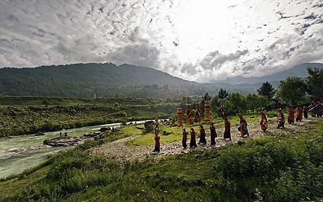

Bhutan är ett kungadöme i södra Asien som gränsar till Kina i norr och Indien i syd. Det inhemska namnet på landet är Druk Yul, vilket betyder "Drakens land". Bhutan kallas också Druk Tsendhen, "Åskdrakens land". Bhutan faller inom den tibetanska kultursfären och språkligt, etniskt och religiöst finns det starka band mellan den tibetanska och den bhutanesiska kulturen. Under tidigt 1600-tal inrättas en buddhistisk teokrati, som styr landet fram tills 1910, då britternas inflytande ökat och de till sist formellt upprättar ett protektoriat över landet. Den nuvarande monarkin upprättades 1907 och styr än idag landet
Bhutan är ett av världens mest slutna länder och möjligheterna för utlänningar att besöka landet är begränsade till vissa utvalda område. Nationalsporten i Bhutan är bågskytte och traditionella bågskyttetävlingar hålls i de flesta byar.
Klimatet i Bhutan varierar mycket mellan de olika regionerna och höjden över havet. Variationerna är dock stora i alla regioner, ibland från den ena dalgången till den andra.
DUppgifterna om antalet invånare har varierat kraftigt. Ett par år före inträdet i FN 1971 hölls landets första folkräkning som visade på nära en miljon invånare, vilket låg som grund för uppskattningar på över två miljoner efter millennieskiftet. Men vid en folkräkning 2005 blev resultatet 672 000, vilket nu över lag har godtagits som en korrekt siffra.